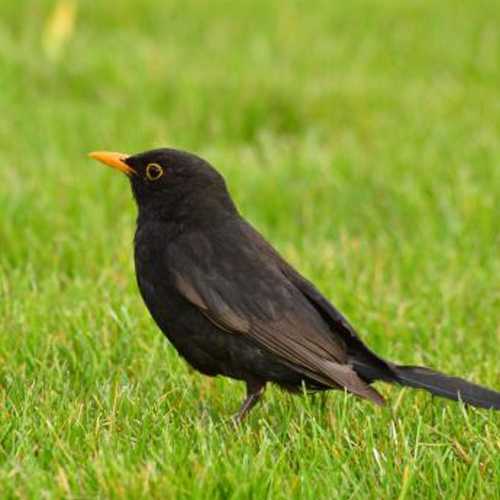

Fekete Rigó
Turdus merula
A fekete rigó (Turdus merula) a madarak osztályának verébalakúak (Passeriformes) rendjébe és a rigófélék (Turdidae) családjába tartozó faj. Triviális neve mellett az eurázsiai fekete rigó néven is szokták emlegetni (különösen Észak-Amerikában, azért, hogy megkülönböztessék az amerikai fekete rigótól), de Magyarországon egyszerűen fekete rigónak nevezik, mert ez nem vezet a hasonló küllemű helyi madárfajokkal való összekeveréshez.
A fekete rigó őshonos költőhelye Európa és Ázsia, valamint behurcolt madárfaj Kanadában, az Amerikai Egyesült Államokban, Mexikóban, Peruban, Brazíliában, Argentínában, Uruguayban és a Falkland-szigeteken, valamint Ausztráliában, ahol kártevőként tekintenek rá, ezen kívül Új-Zélandra is betelepítették. Számos alfaja létezik, amelyek széles körben elterjedtek, melyek közül néhány ázsiai alfaját időnként önálló madárfajként emlegetik. Szélességi körtől függően a közönséges fekete rigó bizonyos területeken áttelel, míg más élőhelyeiről telente melegebb tájakra vonul. Szép énekével kellemes hangulatot teremt az erdőkben, sőt ma már akár a városokban is gyakran lehet vele találkozni.
A hím fekete rigó szinte egész teste fekete, kivéve narancssárga csőrét és szemgolyója körüli gyűrűjét, míg a nőstények és a fiókák elsősorban sötétbarna színezetűek. E madárfaj egyedei erdőkben, kertekben építi fel sárral bélelt, csésze formájú fészkét. Mindenevő, főleg rovarokat, gilisztákat, bogyókat és gyümölcsöket fogyaszt. Mindkét nem védelmezi territóriumukat és ilyenkor hevesen ellenállnak a betolakodóknak, ám telelési területükön és vándorlás közben jóval barátságosabban viselkednek egymással. A párok egész évben a területükön maradnak azokon a vidékeken, ahol az éghajlat elég enyhe ehhez. A fekete rigó Svédország nemzeti madara.